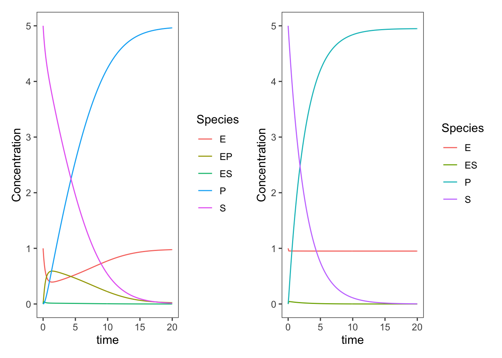

4 Kinetics: Determining Rate Equations for Chemical and Biochemical Reactions
4.1 Remembering Elementary Reactions
Remember from Chapter 1 that if a reaction is elementary we can write the rate of this reaction based on its stoichiometry.
Here, we will make use of this concept to make mathematical models quantifying the kinetics (or reaction rate equations) of complex chemical reactions as well as simple and complex enzymatic reaction. In later chapters we will also apply the ideas developed here to model cells growing in a bioreactor. But before we do that let’s discuss some properties of elementary reactions.
What assumptions can we make to help us propose elementary reactions? What are the rules/properties of elementary reactions?
An elementary reaction must be simple—a single-step, molecular level event. It likely only involves two molecules, as termolecular collisions are very unlikely, and such collisions happening in the correct orientation are even less likely. We can also assume very few bonds will be formed or broken in a single step.
Elementary reactions cannot involve fractional molecules.
Elementary reactions must obey the principle of microscopic reversibility. Microscopic reversibility means that the reaction must follow the same mechanism in the forward and reverse directions. This means that an elementary reaction must be elementary in both directions.
4.1.1 Example of an elementary reaction
As an example of an elementary reaction let’s consider the decomposition of ozone: \[ \require{mhchem}\ce{O3 -> O2 + O^.} \] In reality, ozone does not decompose spontaneously, ozone collides with dioxygen and the energy of this collision drives decomposition. Thus the reaction written above is not elementary, because it is not written exactly how the reaction happens at the molecular level. We can write the elementary reaction as: \[ \require{mhchem}\ce{O3 + O2 -> O2 + O2 + O^.} \] This equation and that above are both stoichiometrically correct, but the later equation describes the elementary reaction. How do we know this is the elementary reaction? From the rate equation. Fitting experimental data on the decomposition of ozone to the equation for the elementary reaction, \(-r_{O_3} = kC_{O_3}C_{O_2}\), yields a much better fit than \(-r_{O_3} = kC_{O_3}\). We will discuss fitting reaction data to rate equations later on.
This iterative process of hypothesizing elementary reactions, based on plausible reaction mechanisms, and fitting experimental data to rate equations derived from these elementary reactions is the basis of chemical and biochemical kinetics.
With this framework for writing elementary reactions in place we can now begin deriving mechanisms and rate equations for more complex reactions, which are actually series of multiple elementary reactions. Let’s look at another more complex example of how a stoichiometrically simple reaction can be broken down into elementary reactions by hypothesizing a mechanism.
4.2 Elementary Reactions Provide Feasible Mechanisms
Most seemingly simple reactions are not elementary as written but can be broken down into a sequence of elementary reactions. Take for example the Haber-Bosch process, by which most nitrogen for fertilizer is fixed from the atmosphere. \[ \require{mhchem}\ce{N2 + 3H2 <=> 2NH3} \]
4.2.0.1 ???Questions???
How many molecules are involved in the forward and reverse reactions? How many bonds are formed/broken in the forward and reverse reactions? Is this reaction likely elementary as written? Why or why not?
In the forward reaction 4 species are required to interact simultaneously, which is very unlikely. In the reverse reaction only two species must interact. In the forward reaction 4 bonds must be broken and 6 bonds must be formed, and the opposite is true for the reverse. No, this reaction is not likely elementary as written as the complex interactions and bond rearrangments are highly unlikely in a single step.
So how does this reaction happen? The Haber-Bosch process relies on a iron catalyst, which facilitates much of this bond breaking and forming by allowing hydrogen and nitrogen species to interact with the catalyst. Let’s call the catalyst here \(\require{mhchem}\ce{S}\) for solid catalyst. \(\require{mhchem}\ce{S^*}\) will represent a open binding site on the catalyst surface. Now let’s write elementary reactions that may constitute a mechanism for the Haber-Bosch process. Initially \(\require{mhchem}\ce{H2}\) and \(\require{mhchem}\ce{N2}\) will adsorb onto the catalyst surface. \[ \require{mhchem}\ce{H2 + 2S^* <=> 2H-S^*} \] \[ \require{mhchem}\ce{N2 + 2S^* <=> 2N-S^*} \] These forward reactions appear to involve three species, however as our catalyst is solid \(\require{mhchem}\ce{2S^*}\) act as essentially a single species. Now to form ammonia these adsorbed species must react. \[ \require{mhchem}\ce{ N-S^* + H-S^* <=> NH-S^* + S^*} \] \[ \require{mhchem}\ce{ NH-S^* + H-S^* <=> NH2-S^* + S^*} \] \[ \require{mhchem}\ce{ NH2-S^* + H-S^* <=> NH3-S^* + S^*} \] And finally the ammonia must desorb from the surface. \[ \require{mhchem}\ce{NH3-S^* <=> NH3 + S^*} \] This proposed mechanism is as simple as possible. The final desorbtion step may happen essentially simultaneously with the final \(\require{mhchem}\ce{N-H}\) bond formation. We may be able to test this hypothesis with kinetic data or assess under what conditions this assumption might be fair once we have derived a rate equation. But before we derive a rate equation, we should check that the stoichiometry of this series of reactions is equivalent to the complete Haber-Bosch reaction stoichiometry.
We can also write the above balanced chemical reactions as equations in a similar way to how we made a stoichiometric table which can be helpful in dealing with multiple reactions in parallel or series.
\[\sum_i \nu_i A_i = 0\] where \(A_i\) is each chemical species \(i\) participating in the reaction, and \(\nu_i\) is the stoichiometric coefficient of species i.
We can write the above reactions in this form and then sum these equations to determine the net overall reaction.
\[\require{mhchem}\ce{ - 3H2 - 6S^* + 6H-S^* = 0} \] \[ \require{mhchem}\ce{- N2 - 2S^* + 2N-S^* = 0} \] \[ \require{mhchem}\ce{ - 2N-S^* - 2H-S^* + 2NH-S^* + 2S^* = 0} \] \[ \require{mhchem}\ce{ - 2NH-S^* - 2H-S^* + 2NH2-S^* + 2S^* = 0} \] \[ \require{mhchem}\ce{- 2NH2-S^* - 2H-S^* + 2NH3-S^* + 2S^* = 0} \] \[ \require{mhchem}\ce{- 2NH3-S^* + 2NH3 + 2S^* = 0} \] We have to multiply these equations to match the stoichiometry of the overall reaction, but in the end you see that the catalyst sites will cancel out along with the other intermediate species yielding the overall net reaction. \[\require{mhchem}\ce{ - N2 - 3H2 + 2NH3 = 0 }\]
Now that we have a mechanism made of elementary reactions that is consistent with the overall reaction, we can write reaction rates for each species in terms of the formation or consumption of that species in each elementary reaction. Then we can solve this set of equations for the rate of the overall reaction in terms of whichever species we’d like, usually the desired product. We won’t do that for this very complicated reaction, but will now jump to simple enzyme kinetics as an example.
4.3 Summary: Kinetics
Given some non-elementary chemical/biochemical reaction we can define a rate equation for this reaction by the following procedure:
- Define a series of elementary reactions, which are plausible and sum up to the overall reaction. Assign rate constants to each reaction (and direction).
- Write out the differential mass balances for each species in the series of reactions. For each species balance look at each reaction and if that species is being generated or consumed by that elementary reaction, write the appropriate rate for that reaction based on the rule of “order = stoichiometry” that applies for elementary reactions.
- You now have a system of differential equations you can use to simulate the reaction!
- To derive a rate equation, pick a species that you want to derive a rate for, typically the product or reactant. Identify the intermediate/unknown/unmeasureable concentrations in the mass balance for that species. You need to replace these with equations derived from the other balances in terms of known quantities.
- Make assumptions to help simplify the system of equations into a single equation (degree of freedom analysis helps here). Is there any step/reaction that might be in equilibrium? What intermediates could you assume to be at steady state? Be sure to note your assumptions and think about when and where they are valid.
- Simplify the the system of equations you have in terms of the intermediates you need to get rid of in your rate equation and plug them in.
- Lump together any combinations of parameters in your equation and define them.
4.4 Deriving enzymatic rate equations
So based on our outlined procedure let’s write out some elementary reactions describing how a simple enzyme works. Let’s assume an enzyme, \(E\) converts a substrate, \(S\) to product, \(P\): \[\ce{S ->[E] P}\] To break this overall reaction up into elementary reactions we need to think about each molecular interaction necessary. First, the enzyme and substrate need to come together in a binding reaction. Then the substrate can be converted to the product in a catalytic step, but still remain bound to the enzyme. Finally the product dissociates from the enzyme. (In the biochemical literature binding and association, and unbinding and dissociation, are used interchangeably). For now all of these reactions could be reversible. So writing out this series as chemical reactions yields the following. \[\ce{S + E <=>[k_1][k_{-1}] ES}\] \[\ce{ES <=>[k_2][k_{-2}] EP}\] \[\ce{EP <=>[k_3][k_{-3}] E + P}\] In this series of equations we have 5 different species—3 of which we probably can’t measure, the active centers \(E\) (free enzyme), \(ES\), and \(EP\)—and 3 independent reactions (reverse reactions are not independent of the forward). We also have 6 unknown parameters, all of the \(k\)’s. So in terms of degrees of freedom this system is solvable for a rate in terms of \(S\) and 4 parameters (these will be combinations of the \(k\)’s: 6 unknown parameters + 3 unknown variables - 5 equations (one per species) = 4 degrees of freedom. We could write a rate equation for this system if we assume the reactive centers are at steady-state, but the algebra will definitely be tedious. Also, once we get to the final rate equation we may have more parameters than our data can accurately fit. But it is possible to simulate the set of differential equations resulting from this series of reactions relatively easily. We still have many parameters, but we can just give those reasonable and interesting values for demonstration purposes.
So let’s write out these equations. We can begin with the general balance for a batch reactor, and write the accumulation term for each species. The for each species balance look at each reaction above and if that species is being generated or consumed by that elementary reaction, write the appropriate rate for that reaction based on the rule of “order = stoichiometry” that applies for elementary reactions. Don’t forget the reverse reactions!
\[\begin{align} \text{Accumulation} &= \text{Generation} &-& \text{Consumption} \\ \frac{d[S]}{dt} &= k_{-1}[ES] &-& k_{1}[E][S] \\ \frac{d[E]}{dt} &= k_{-1}[ES] + k_{3}[EP] &-& k_{1}[E][S] - k_{-3}[E][P] \\ \frac{d[ES]}{dt} &= k_{1}[E][S] + k_{-2}[EP] &-& k_{-1}[ES] - k_{2}[ES] \\ \frac{d[EP]}{dt} &= k_{2}[ES] + k_{-3}[E][P] &-& k_{-2}[EP] - k_{3}[EP] \\ \frac{d[P]}{dt} &= k_{3}[EP] &-& k_{-3}[E][P] \end{align}\]
Now to simulate this set of equations we need to define these equations as a differential function.
## function defining our differential equations
complete_enzyme_model <- function(time, curr_state,
parms) {
with(as.list(c(curr_state, parms)), {
## The with() function gives access to the named
## values of parms and curr_state within the local
## function environment
dSdt = k_n1 * ES - k_1 * E * S
dEdt = k_n1 * ES + k_3 * EP - k_1 * E * S -
k_n3 * E * P
dESdt = k_1 * E * S + k_n2 * EP - k_n1 * ES -
k_2 * ES
dEPdt = k_2 * ES + k_n3 * E * P - k_n2 * EP -
k_3 * EP
dPdt = k_3 * EP - k_n3 * E * P
## the computed derivatives are returned as a list
## order of derivatives needs to be the same as the
## order of species in curr_state
list(c(dSdt, dEdt, dESdt, dEPdt, dPdt))
})
}Now we can set the parameter, \(k\) values and initial conditions.
## A vector containing the parameter values
parms <- c(k_1 = 0.4, k_n1 = 0.004, k_2 = 40, k_n2 = 0.003,
k_3 = 1, k_n3 = 0.003)
init_state <- c(S = 5, E = 1, ES = 0, EP = 0, P = 0)
time <- 0
library(tidyverse)
delta.t <- 0.1 ## 0.1 hours
time.out <- seq(0, 20, by = delta.t)
ts.complete_enzyme_model <- data.frame(deSolve::lsoda(y = init_state,
times = time.out, func = complete_enzyme_model,
parms = parms))
ts.complete_enzyme_model <- tidyr::pivot_longer(data = ts.complete_enzyme_model,
cols = c("S", "E", "ES", "EP", "P"), names_to = "Species",
values_to = "Concentration")
(complete <- ggplot(data = ts.complete_enzyme_model,
mapping = aes(x = time, y = Concentration, color = Species)) +
geom_line())This now gives us a really nice view of each complex and allows us to make some assumptions to simplify our model of enzyme kinetics and check the validity of these assumptions. Bioprocess Engineers and Biochemists typically use a much simpler mechanistic model built on several valid assumptions to describe enzymatic reactions.
To simplify this enzyme reaction mechanism a bit we can make the following assumptions that are likely true for most enzymes: 1) Catalysis is irreversible. This is particularly true in the case inside of cells when products of an enzyme are often further acted upon by other enzymes in a metabolic pathway. It also holds true for the early stages of in vitro reactions, when substrate concentrations are high and product concentrations are low. It is also a valid assumption when the \(\Delta G\) of the reaction is large. 2) EP is short lived, enzyme has low affinity for the product. This is generally true for most natural enzymes as in order to bind more substrate and complete another reaction, the product must first be released. So in general enzymes will have much lower binding affinity for their products than their substrates.
\[\ce{S + E <=>[k_1][k_{-1}] ES}\] \[\ce{ES ->[k_2] E + P}\]
\[\begin{align} \text{Accumulation} &= \text{Generation} &-& \text{Consumption} \\ \frac{d[S]}{dt} &= k_{-1}[ES] &-& k_{1}[E][S] \\ \frac{d[E]}{dt} &= k_{-1}[ES] + k_2[ES] &-& k_{1}[E][S] \\ \frac{d[ES]}{dt} &= k_{1}[E][S] &-& k_{-1}[ES] - k_{2}[ES] \\ \frac{d[P]}{dt} &= k_{2}[ES] \end{align}\]
## function defining our differential equations
simplified_enzyme_model <- function(time, curr_state,
parms) {
with(as.list(c(curr_state, parms)), {
## The with() function gives access to the named
## values of parms and curr_state within the local
## function environment
dSdt = k_n1 * ES - k_1 * E * S
dEdt = k_n1 * ES + k_2 * ES - k_1 * E * S
dESdt = k_1 * E * S - k_1 * ES - k_2 * ES
dPdt = k_2 * ES
## the computed derivatives are returned as a list
## order of derivatives needs to be the same as the
## order of species in curr_state
list(c(dSdt, dEdt, dESdt, dPdt))
})
}## A vector containing the parameter values
parms <- c(k_1 = 0.4, k_n1 = 0.004, k_2 = 40)
init_state <- c(S = 5, E = 1, ES = 0, P = 0)
time <- 0
library(tidyverse)
delta.t <- 0.1 ## 0.1 hours
time.out <- seq(0, 20, by = delta.t)
ts.simplified_enzyme_model <- data.frame(deSolve::lsoda(y = init_state,
times = time.out, func = simplified_enzyme_model,
parms = parms))
ts.simplified_enzyme_model <- tidyr::pivot_longer(data = ts.simplified_enzyme_model,
cols = c("S", "E", "ES", "P"), names_to = "Species",
values_to = "Concentration")
(simplified <- ggplot(data = ts.simplified_enzyme_model,
mapping = aes(x = time, y = Concentration, color = Species)) +
geom_line())
Plotting these next to each other for comparison
library(patchwork)
complete + simplifiedGetting rid of the internal states does, of course, speed up the rate of production of product/consumption of substrate, but we didn’t adjust our parameters at all. The \(k_{-2}\), \(k_3\), and \(k_{-3}\) values are all now lumped into \(k_2\) or as it is more typically referred to in this Michaelis-Menten model, \(k_{cat}\). We could change these parameters to better match the original complete model.
## A vector containing the parameter values
parms <- c(k_1 = 0.3, k_n1 = 0.004, k_2 = 5)
## And the initial values and time points
init_state <- c(S = 5, E = 1, ES = 0, P = 0)
time <- 0
delta.t <- 0.1 ## 0.1 hours
time.out <- seq(0, 20, by = delta.t)
## Now run the model
ts.simplified_enzyme_model <- data.frame(deSolve::lsoda(y = init_state,
times = time.out, func = simplified_enzyme_model,
parms = parms))
## and reformat it for plotting
ts.simplified_enzyme_model <- tidyr::pivot_longer(data = ts.simplified_enzyme_model,
cols = c("S", "E", "ES", "P"), names_to = "Species",
values_to = "Concentration")
## and finally plot it
simplified <- ggplot(data = ts.simplified_enzyme_model,
mapping = aes(x = time, y = Concentration, color = Species)) +
geom_line()
complete + simplified
Check out this nice shiny app and play with the sliders to get a feel for what changing each parameter does to the model.